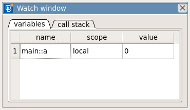

Script Editor#
Introduction#
Whether you are an experienced developer or a beginner to the field of programming, the Script Editor is going to be a good friend of yours, for at least your first couple of experiments with the ANSA API. Although it’s mainly designed as a playground for simple python scripts, the Script Editor is a complete editing environment attached directly to the ANSA core functionality, while offering very useful search and documentation help features. In order to access the Script Editor from ANSA, press the menu button Tools –> Script –> Script Editor. The Script Editor window will open and you can either start editing a new file or open an already existing one, by using the respective options from the File menu.
A new file on the Script Editor will look as the following:

We can destinguish the following sections:
- Center
The central part of the window is the editor for python scripting. Here the ansa module works and can be imported with no need for further steps and specific python and ANSA API keywords are highlighted.
- Project window
The list of files in a project.
- Function list
A Search toolbar where you can search through all ANSA API functions and classes. If you right click on one of these entries, it will be automatically written on the current file.
- Output window
If you double click on an entry in the search results list or press F1 while the cursor is on a function, a short documentation will open on the Help tab of the Output window.
When you press the Run button or the F5 key, the code will be executed and all the appropriate messages will appear on the Output tab.
Note
Greyed out functions found in the Script Editor search are deprecated. They are still functional but it’s better to use the new version of the same function.
Debug Mode#
The default way to run a python script is to press the Run button, however there is a more advanced way to run a script by pressing the Debug button. Debug mode executes the script as expected and prints the output messages on the Output tab, but it also gives you access to more options like stopping the script midway and checking values of variables while the script runs.
For the debug session you can click any of the following buttons:
Button |
Description |
|---|---|
Debug |
Run in debug mode, meaning the execution will stop at the first breakpoint. |
Step (over) |
Run one line of code and go to the next one. If a function is called, the function is executed fully, respecting any breakpoints that may exist. |
Step into |
Run one line of code and go to the next one. If a function is called, step into function and execute it step by step. |
Step out |
Run code until the next breakpoint or until the end of the innermost function. |
Breakpoint |
Add breakpoint at the line where the cursor is currently. |
Clear breakpoints |
Remove all breakpoints. |
Watch window#
There is a way to keep watch of the variables’ values during the debug execution. To do so, you need to open the Watch window from View –> Watch window.

In the ‘variables’ tab you can watch variables change values while you run in debug mode. You can add variables by right clicking on an assignment and selecting ‘Add watch (variable)’.
In the ‘call stack’ tab you can see the function calls that were taken to reach the current breakpoint. The functions in this list were called from bottom to top with the function at the top of the list being the the function that is currently being run.
Stop Debug#
To stop the execution of a script in debug mode you can press the Pause/Break button on the keyboard.
Tabs and spaces#
Sometimes when opening a file with code written in a different text editor, there could be different indentations used like tab character instead of spaces or different amount of spaces. To check if this is causing an error, you can press View –> Show tabs and spaces, which will color tabs and spaces differently to indicate possible problematic areas.
To quickly replace all indentations, go to View –> Replace Indentation Tabs with Customised Spaces.
To change the default indentation, go to View –> Select Font –> Tab Options.
BCGui Designer#
The BCGui Designer is a tool to help programers get started designing in BCGui by using a graphical user interface. Its main advantage is that the designer automatically generates code, thus reducing the preparation time of a script. The designer has all widgets as options in a toolbox and, if you click on one, the selected widget will appear in the BCGui window and the full corresponding script will be generated. The Designer is accessed through the Script Editor, by clicking on Tools –> Designer.
The initial launch interface of the Designer will look as the following:

We can destinguish the following sections:
- Center
The central part of the Designer is where the BCGui window you make will appear.
- ToolBox
The window that hosts all the functions for creating widgets, layouts or items.
Initially, only the Window tab is active, so expand the Window tree and press the Apply Settings button to create the main window with the name ‘TopWindow’. This will make the rest of the categories available. Then expand any widget of your choice, make changes if needed and press Apply Settings to create the object. Continue like so to make any object you wish.
- Constructed Items
A tree list with all created items where it’s easy to recognize any parent-child relationship or objects’ classes.
To make an object with a specific parent first select the parent object from the constructed items tree (which will highlight the object) and then construct the child object. Otherwise you can make it anywhere and drag and drop it in place.
- Common Parameters
The window that lists all the parameters that are common for each BCGUI item.
To use one of the common parameters, select a widget from the Constructed Items tree then expand the parameter, make changes if needed and press the Apply Settings.
- Parameters
The window that displays all the parameters related to the selected item from the Constructed Items window.
To use one of the parameters, select a widget from the Constructed Items tree then expand the parameter, make changes if needed and press the Apply Settings.
- CallBack Functions
The window that hosts all the created callback functions.
The functions from the Parameters window whose names ends with ‘Function’ are used to set up the callback functions of objects. When the Apply Settings button is pressed with a function name set, the callback type and its name are automatically listed under the CallBack window. Then on the CallBack Functions window you can start writing code if you want.
- Help
The area where the documentation of the selected function is displayed.
By selecting a parameter either from the Common Parameters or from the Parameters window, displays the help text of the corresponding BCGUI function on the Help area.
- Source Code
The area where the automatically created source code resides.
The code is automatically generated whenever an Apply Settings button is pressed or the Constructed Items tree is modified manually. The source code is not editable and changes automatically only on the aforementioned circumstances.
To make changes to the source code, you can export it to the Script Editor through Code –> Set Code to Script Editor.
You can read more info on how to use the BCGui Designer.